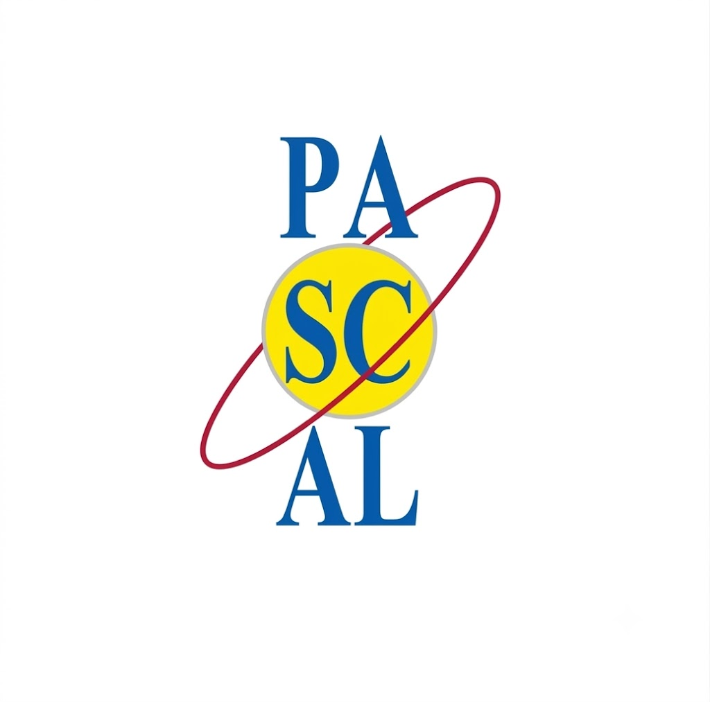

Il mio percorso al Pascal

L'ossessione batterà sempre il talento.
Mi chiamo Adamo Conte e mi sono trasferito dalla Puglia ad Avigliana nel 2021. Nel corso di questi anni ho avuto modo di mettermi alla prova:
L'organizzazione del tempo
Pianificare un programma di studi è necessario per poter essere in grado di affrontare l'anno scolastico, soprattutto i primi anni nell'istituto è necessario dedicargli tanto tempo in modo tale da crearsi il proprio metodo di studio.
La gestione delle emozioni
Quando mi sono inscritto a questa scuola ero molto impulsivo, mi affrettavo a dare una risposta anche quando non la sapevo, mi facevo guidare molto dalle mie emozioni e l'ansia molte volte mi faceva commettere errori di distrazione.
Lavoro di squadra
Ho imparato che la determinazione individuale è fondamentale, ma da sola non basta. Lavorare in team mi ha permesso di risolvere problemi più velocemente, unendo le mie intuizioni a quelle dei compagni per raggiungere un risultato finale molto superiore a quello che avrei ottenuto da solo.